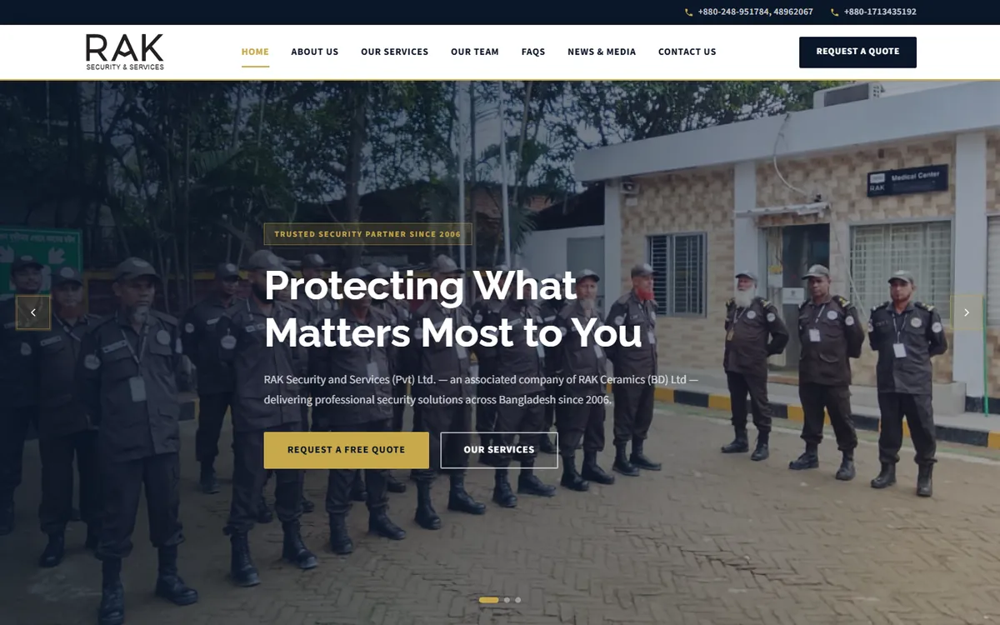
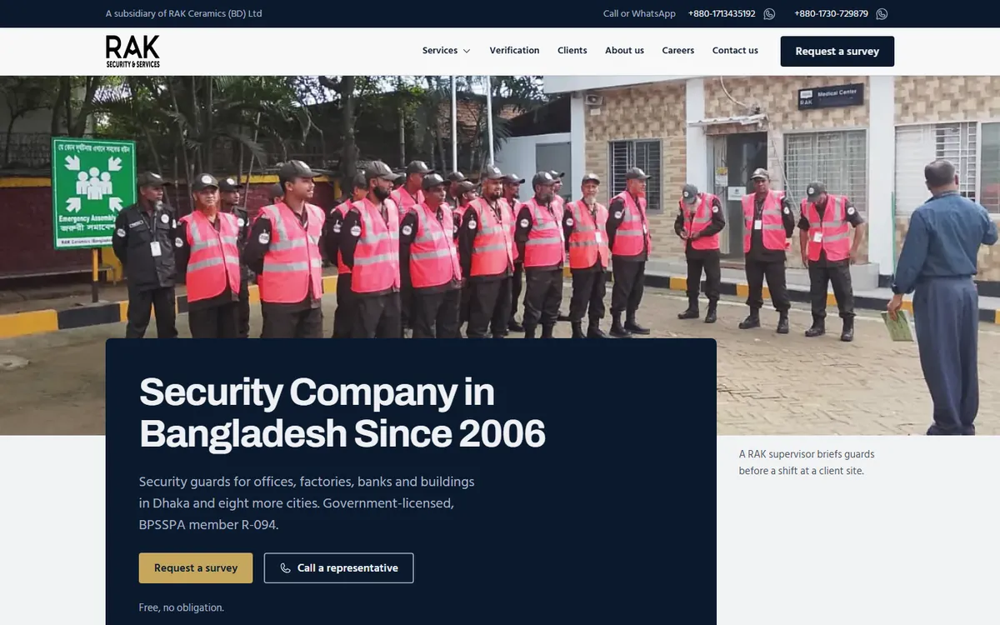
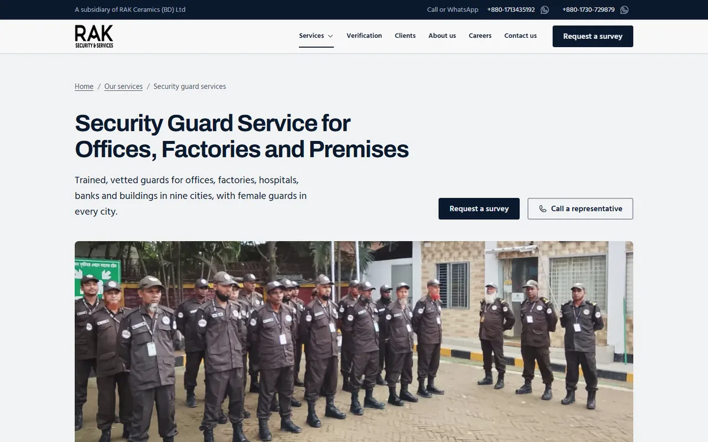

VibeCoding build · Redesign and SEO In progress
A security company site, rebuilt for search and AI answers
RAK Security and Services has guarded Bangladeshi businesses since 2006. Its site said little a buyer could check. I'm rebuilding it around proof and getting it ready for Google, the map pack and AI answers.


At a glance
- A 35-page redesign, written answer-first and checked against a brand system I set up for RAK.
- 423 keywords researched, 166 curated into 15 clusters, each with one owner page.
- A schema library, llms.txt and an AI prompt tracker: 22 buyer prompts across 5 AI assistants.
- Client
- RAK Security and Services (Pvt) Ltd.
- Where
- Uttara, Dhaka
- Platform
- WordPress
- Started
- October 2026
- Status
- In progress
What I am building
Every part of the job, from the first design to the tracking.
UI design
Redesign from a brand system
RAK's navy and gold, kept and made matte. Only RAK's own photos of its guards, no stock. One main action on every screen: Request a survey.

SEO
On-page SEO
One owner page per keyword cluster, titles and H1s from the keyword map, and a 40 to 60 word answer at the top of every page.
Web development
Technical SEO
A redirect map for dead service URLs, robots and server rules, Yoast extended with a schema snippet, and a production backup before any change.
SEO
Off-page and local SEO
An outreach and citation pack, a plan to move every directory listing to one address, and a Google Business Profile plan for the map pack.
GEO and AEO
GEO and AEO
AI Overviews show on four of seven money searches. So: llms.txt, a facts-first schema library, question banks and a monthly AI prompt tracker.
SEO
Keyword research
Semrush data for Bangladesh plus a manual checklist. The biggest winnable cluster turned out to be cleaning and facility services, at 10,380 searches a month.
Analytics and tracking
Tracking
A GA4 lead event on the thank-you page, position tracking in Semrush, and Microsoft Clarity once RAK's project is set up.
Content and copy
Content strategy
Page copy, buyer guides and a case study in RAK's voice: plain, exact, calm. No prices and no numbers RAK can't back up.
Where it stands
Dated from the project's own build logs and deliverables.
- 8 Oct
Phase 1: keyword master and cluster map, titles and metas, a new page backlog, a technical fix log, a redirect map and a developer handoff pack.
- 18 Oct
Phase 2 from fresh Semrush data: keyword universe, schema library, entity graph, a GEO, AEO and SXO playbook, an AI prompt tracker. Brand system version 1.
- 19 Oct
Web copy for 30 pages and guides, scored against a 20-point checklist.
- 21 Oct
Outreach and citation pack for off-page SEO.
- 27 Oct
Client intake: facts, licences and services confirmed. Strategy updated.
- 31 Oct
Production backup and a local copy of the site to build against.
- 1 Nov
Build pack: an SEO head sheet for every page, 9 schema templates, llms.txt, robots.txt, redirect map v2 and the Business Profile setup.
- Next
Port the redesign into WordPress and launch.
RAK's client data and analytics stay private. Market figures are Semrush data for Bangladesh. The redesign isn't live yet; the screenshots are from the build.